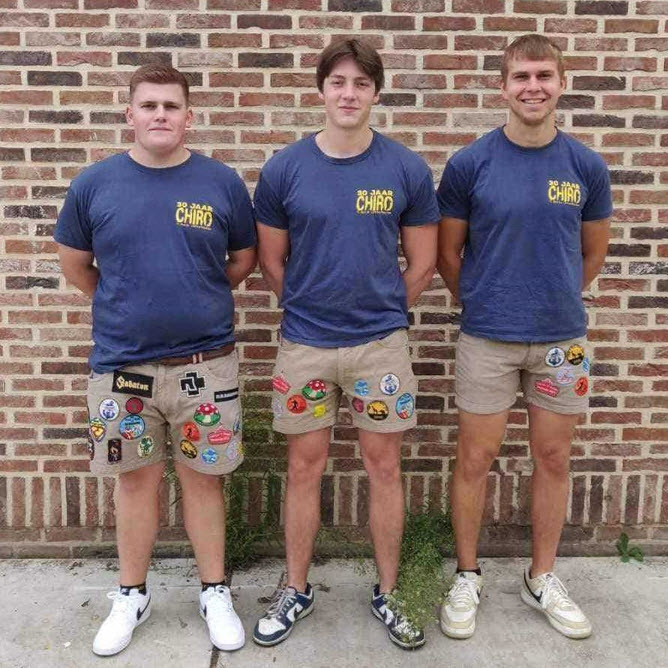
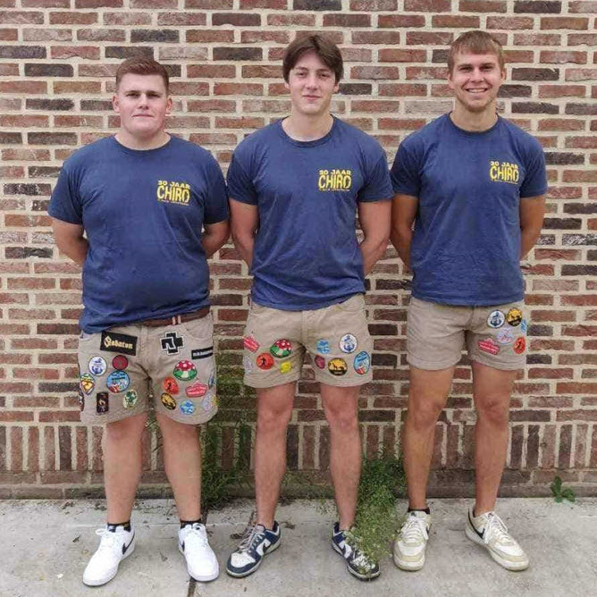

Welkom op de site van Chiro 't Rotje!
Elke zondag entertainen wij jong en oud van 14.00 u. tot 17.00 u. Jullie vinden ons in Letterhoutem op het Rot, nummer 6.
Iedereen van 6 tem 18 jaar is van harte welkom voor uren speelplezier op zondag.
Meer info
Vorig jaar stond het kamp volledig in het thema van de kleine wereld van kabouters. Hopelijk wordt het dit jaar weer even spannend, cool, maar vooral: plezant. Dit jaar staat er echter een nieuwe uitdaging en daarbij aansluitend een nieuw thema klaar: Western! Hopelijk zijn jullie even nieuwsgierig als de leidingsploeg naar wat ons dit jaar allemaal te wachten staat!
Vrijdag 29 september, zaterdag 30 september en zondag 1 oktober is het ons feestweekend.
We zetten het weekend in op vrijdag met een oud-leidingavond. Zaterdag kunnen jullie je verwachten aan gratis optredens, een streekbiercafé en koers op rollen. Als afsluiter organiseren we op zondag een brunch met aansluitende wandeling en in de namiddag voorzien we activiteiten voor jong en oud. Houd het evenement goed in de gaten voor alle details rond de feestelijkheden!
| Datum | Activiteit | Tijdstip |
|---|---|---|
| 6 november | Gewone chiro | 14.00-17.00 u. |
| 13 november | Gewone chiro | 14.00-17.00 u. |
| 19 november | Chirosjima | 21.00-05.00 u. |
| 27 november | Gewone chiro | 14.00-17.00 u. |
| 4 december | Gewone chiro | 14.00-17.00 u. |
| 16 december | Kerstfeestje (vanaf Tito) | 14.00-17.00 u. |
| 18 december | Kerstfeestje jongsten | 14.00-17.00 u. |
Elonie Waterloos (links)
Cato Vandemaele (midden)
Elena Sey (rechts)
Ellen Goutry (links)
Julie Van Acker (midden)
Anna Rotsaert (rechts)
Phebe De Decker (links)
Tom Vossaert (midden)
Chelsea Vroman (rechts)
 


De Chiro is de grootste jeugdbeweging van Vlaanderen en Brussel. Iedereen is welkom vanaf het eerste leerjaar. Met meer dan 100 000 zijn we, verspreid over bijna 900 groepen.
De Chiro wil op zoveel mogelijk verschillende plaatsen in Vlaanderen en Brussel kinderen en jongeren in hun vrije tijd bijeenbrengen. We willen hierbij alle kinderen en jongeren aanspreken, ongeacht hun sociale of culturele achtergrond, ongeacht hun fysieke of intellectuele capaciteiten. Via spel willen we kinderen en jongeren ervaringen laten opdoen, leren samenleven, hen een kijk bieden op zichzelf en de wereld.
Chiro 't Rotje is de ideale keuze voor zondagnamiddagen vol spelplezier, een onvergetelijk kamp en zoveel meer! Neem zeker eens een kijkje op onze facebookpagina voor meer info.